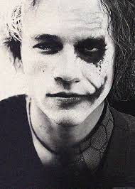

was an Australian actor, photographer, and music video director. After performing roles in several Australian television and film productions during the 1990s, Ledger left for the United States in 1998 to further develop his film career. His work consisted of nineteen films, including 10 Things I Hate About You (1999), The Patriot (2000), A Knight's Tale (2001), Monster's Ball (2001), Lords of Dogtown (2005), Brokeback Mountain (2005), Candy (2006), The Dark Knight (2008), and The Imaginarium of Doctor Parnassus (2009), the latter two being posthumous releases.[1] He also produced and directed music videos and aspired to be a film director
